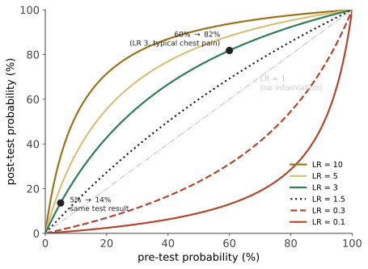

诊断 I · 诊断即推断：先验、似然比、后验
临床诊断在形式上就是贝叶斯更新：从一个先验概率出发，每一条信息（症状、体征、检验、影像）把它乘以一个似然比，得到后验。这一页把这件事完整推导出来，并说明为什么"检验结果阳性"远不等于"有病"。
1. 从贝叶斯定理到诊断
设 \(D\) 为患病、\(T^+\) 为检验阳性：
翻译成临床术语：\(P(D)\) 是验前概率（患病率或临床印象），\(P(T^+\mid D)\) 是敏感度 Sn，\(P(T^+\mid \bar D)\) 是 1 − 特异度 Sp。
这个式子的形式不方便床边用。改写成几率（odds）形式后它变得极其好用：
验后几率 = 验前几率 × 似然比。 一句话，一次乘法。
几率与概率互换：\(\text{odds} = \dfrac{p}{1-p}\)，\(p = \dfrac{\text{odds}}{1+\text{odds}}\)。
2. 似然比的量级感
这张表值得记住，因为它把"这个检查有多大用"变成一个可比较的数：
| \(LR^+\) | 对后验的影响 | \(LR^-\) | 影响 |
|---|---|---|---|
| > 10 | 大幅提高（约 +45 个百分点） | < 0.1 | 大幅降低 |
| 5–10 | 中等提高（+30） | 0.1–0.2 | 中等降低 |
| 2–5 | 小幅提高（+15） | 0.2–0.5 | 小幅降低 |
| 1–2 | 几乎无用 | 0.5–1 | 几乎无用 |
| = 1 | 完全无信息 |
"LR = 1 的检查等于没做"——但它仍然收费、仍然有假阳性带来的后续检查与焦虑。这是本站反复出现的一条：无信息的检查不是中性的，它是有害的（第 03 页）。
几个真实的例子（数量级示意）：
| 发现 | 目标疾病 | \(LR^+\) |
|---|---|---|
| 第三心音奔马律 | 左心室功能不全 | ~11 |
| 颈静脉怒张 | 心衰 | ~5 |
| D-二聚体阴性（高敏法） | 肺栓塞 | \(LR^- \approx\) 0.05–0.1 |
| 胸痛"向双臂放射" | 急性心梗 | ~2.6 |
| 胸痛"位置可用一指点出" | 急性心梗 | ~0.3 |
| 无外周水肿 | 心衰 | ~0.6（弱，不能排除） |
注意最后一条的用法：许多"经典体征"的 \(LR\) 接近 1，其缺失几乎不能排除疾病。这就是"体征阴性 ≠ 没病"的定量版本。
3. 一个完整的算例

例题：一位 55 岁男性因典型劳力性胸痛就诊。基于年龄、性别与症状特征，冠心病的验前概率约 60%。运动负荷心电图阳性（\(Sn \approx 0.68\)，\(Sp \approx 0.77\)，故 \(LR^+ = 0.68/0.23 \approx 3.0\)）。
- 验前几率 \(= 0.6/0.4 = 1.5\)
- 验后几率 \(= 1.5 \times 3.0 = 4.5\)
- 验后概率 \(= 4.5/5.5 \approx \mathbf{82\%}\)
换一个人：一位 35 岁女性，非典型胸痛，验前概率约 5%。同样阳性结果：
- 验前几率 \(= 0.05/0.95 = 0.053\)
- 验后几率 \(= 0.158\)，验后概率 ≈ 14%
同一份阳性报告，一个人 82%、另一个人 14%。 检验没有变，变的是验前概率。
这个例子的实践含义极重要：在低验前概率人群中做检查，阳性结果多半是假阳性——这是"没事查一查"造成伤害的数学原因，第 03 页会把它展开成筛查悖论。
4. 多条证据的串联
若各条证据在给定疾病状态下条件独立，似然比可以连乘：
但"条件独立"这个前提在临床上经常不成立——发热与白细胞升高、呼吸困难与低氧、D-二聚体与临床评分之间都相关。连乘会高估证据强度。
这就是临床决策规则（clinical decision rules）存在的理由：Wells 评分、PERC、HEART、CURB-65 等是在真实数据上拟合出来的多变量模型，已经吸收了变量间的相关结构，因此它们优于把单个 LR 硬乘。🔗 数学站的逻辑回归与研究生数学站的统计学习线是它们的引擎室。
5. 检验阈值与治疗阈值
这是把概率变成行动的一步，也是本页最实用的框架（Pauker & Kassirer）。
设两个阈值：检验阈值 \(P_t\)（低于它则不查、不治）与治疗阈值 \(P_{rx}\)（高于它则直接治、不必再查）。
直觉：治疗越安全有效、漏诊后果越严重，治疗阈值越低。
| 情境 | 治疗阈值 | 理由 |
|---|---|---|
| 疑似细菌性脑膜炎 | 极低（几个百分点即用药） | 漏诊致命、抗生素相对安全 |
| 疑似肺栓塞 | 低 | 漏诊致命；但抗凝有出血风险 |
| 长期他汀预防 | 较高 | 获益小而缓慢、需终身服药 |
| 化疗 | 高 | 危害巨大 |
"三区间"决策：\(P < P_t\) → 不查不治；\(P_t < P < P_{rx}\) → 查（只有此时检查才可能改变行动）；\(P > P_{rx}\) → 直接治。
由此得到本站最实用的一条规则：
在做任何检查之前，先问：无论结果是阳性还是阴性，我下一步的行动会不同吗？ 若不会，这个检查就不该做。
🔗 这与你预测层"三道闸门"里"剔除已发生/不可证伪命题"的思路完全同构：不改变行动的信息不值得采集。
6. 验前概率从哪里来
这是初学者最常卡住的地方。四个来源，按可靠性排序：
- 流行病学数据（该年龄性别人群的患病率）——最客观，但未考虑就诊这一事实本身携带的信息；
- 就诊场景的患病率（同样是胸痛，在社区诊所与在急诊室的冠心病概率相差数倍）——"场景即先验"是临床最重要的一条经验；
- 已验证的预测模型（Diamond–Forrester 及其修订、Wells、Centor）；
- 临床印象——有价值但系统性偏高（第 04 页：可得性启发式）。
一个常被忽略的偏倚：教科书上的"典型表现"来自住院或转诊患者，在初级医疗中疾病谱完全不同（谱偏倚 spectrum bias，第 07 页）。在门诊用三甲医院的先验，是过度检查的一个结构性来源。
7. 本页的四条收获
- 验后 = 验前 × 似然比。任何关于"这个检查准不准"的讨论，如果不谈验前概率，就是不完整的；
- 敏感度与特异度是检验的属性，预测值是情境的属性（第 02 页展开）；
- LR 在 0.5–2 之间的检查几乎没有信息量，但仍有成本与危害；
- 只在"检查结果会改变行动"的概率区间里做检查。
参考与更新
复审记录：最后复审 2026-08-02；按六个月规则，下一次常规复审不晚于 2027-02-02。若安全信号、指南/监管更新或动态清单变化，则提前复审；具体适用地区以各条来源与当地最新版本为准。
- NICE NG158: Venous thromboembolic diseases（临床指南中的概率分层与 D-二聚体路径；2020，后续更新；英国。）
- STARD 2015（诊断准确性研究报告规范；2015；国际。）
- Cochrane Handbook（证据综合与效应解释；当前版本页面；国际。）
下一页：把敏感度、特异度、ROC 曲线与截断值的选择讲透——为什么"提高准确率"不是一个良定义的目标。